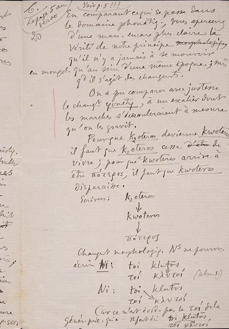
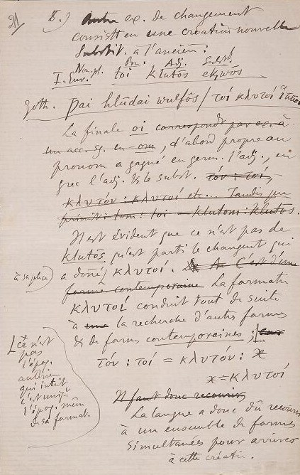

Autore del manoscritto: Ferdinand de Saussure (1857-1913).
Titolo: Morphologie
Lingua: Scritto in lingua francese.
Acquisito:
Biblioteca di
Ginevra
Fruzione: Opera ad accesso libero
Descrizione fisica
Supporto: Fogli di carta,
Numero di fogli: 19 fogli.
Condizioni: Le pagine risultano parzialmente leggibili. Alcune parole, cancellate con una linea
nel mezzo
oppure con un font più spesso, sono particolarmente difficili da leggere.
Layout:
Le pagine hanno dalle 25 alle 30 righe (alcune righe sono composte solo da frecce).
Mani: Essendo preso dagli archivi di Ferdinand De Saussure, il testo sembrerebbe scritto
totalmente da lui.
Grafia: Il tipo di scrittura è simile al corsivo. Ci sono parole cancellate con una linea
nel mezzo
e alcune parole sono ricalcate.
Storia
Questo manoscritto si compone di una parte.
Gli appunti vennero scritti da Ferdinand De Saussure
e vennero parzialmente presentati durante le prime tre lezioni (almeno) ai suoi studenti.
Si suppone che sia del periodo 1893-1894,
ma potrebbe risalire anche al 1894 -1895.
Questi appunti furono presi a Ginvera.
Il documento originale è tratto dalla Biblioteca di Ginevra
Legenda
Elemento terminologico
Esempio linguistico (francesismo)
Aggiunte del curatore
Aggiunte dell'autore
Abbreviazioni
Cancellazioni
Correzioni
Glottonimi
Pagina 20

1 ➛
En comparant cequice qui se passe dans
2 ➛
le domaine phonétique, vous apercevrez
3 ➛
d’une manière encore plus claire la
4 ➛
vérité de notre principemorphologie 5 ➛
qu’il n’y a jamais à se mouvoir,
6 ➛
en morph.morphologie, qu’au sein d’une même
époque; même
7 ➛
qdquand il s’agit des
changements.
8 ➛
On a pu comparer avec justesse
9 ➛
le chang. phonétiqchangement phonetique à un escalier dont
10 ➛
les marches s’écrouleraient à mesure
11 ➛
qu’on les gravit.
12 ➛
Pour que
k2oteros devienne
kwoteros,
13 ➛
il faut que
k2oteros cesse, d'etri de
14 ➛
vivre; pour que kwoteros arrive à
15 ➛
etrêtreπότερος, il faut que kwoteros 16 ➛
disparaisse.
17 ➛
Écrivons: k2oters 18 ➛
kwoteros 19 ➛
πότερος 20 ➛
Changement morphologique: NSnous ne pouvons
21 ➛
écrire Ni: toi klutōs 22 ➛
τοί ϰλυτοί (absurde),
23 ➛
Ni: toi klutōs 24 ➛
τοί ϰλυτοί,
25 ➛
carcecar ce n'est evid.evidemment
pas le toi delade la 26 ➛
gener.generationprec.précédente qui a [engendré ϰλυτοί]. Il faut écrire:
toi klutōs 27 ➛
τοί ϰλυτοί.
Traduzione
Mettendo a paragone ciò che accade nel dominio fonetico, vi accorgerete in un modo
ancora più chiaro della verità del nostro principio,
che non ci si deve muovere, in morfologia, se non in seno a una stessa epoca, anche
quando si tratta di cambiamenti.
Si è potuto giustamente paragonare il cambiamento fonetico a una scala in cui i gradini
si distruggono man mano che li si sale.
Perché k2oteros divenga kwoteros, bisogna che k2oteros cessi di vivere; perché kwoteros
arrivi a essere πότερος bisogna che kwoteros scompaia.
Scriviamo:
k2oteros
kwoteros
πότερος.
Cambiamento morfologico: non possiamo scrivere nè
toi klutos
τοί κλυτοί (absurde),
nè toi klutōs
τοί κλυτοί
Perché evidentemente non è il τοί della generazione precedente che ha [generato κλυτοί].
Bisogna scrivere:
toi klutōs
τοί κλυτοί
Pagina 21

1 ➛
Autre ex.exemple de changement 2 ➛
consistant en une création nouvelle 3 ➛
substit.substituée à l’ancienne:
4 ➛
Nom.Nominatifpl.plurielPron.PronomAdj.AdjectifSubst.Substantif 5 ➛
I.Eur.Indo-Europeentoi klutōs ek1wōs 6 ➛
Goth.Gothiqueƥai hlūdai wulfōsGrecτοί ϰλυτοί ἵπποι 7 ➛
La final - oi 8 ➛
d’abord propre au
9 ➛
pronome, a gagné en
germ.germanique l’
adj.adjectif, en
10 ➛
grec l’
adj.adjectif et le subst.substantif. tòv:toi,
11 ➛
ϰλυτοv:ϰλυτοί etc... Tamlis pue 12 ➛
princip: τοm:τοί klutōi:klutōs.
13 ➛
Il est évident que ce n’est pas de
14 ➛
klutōs qu’est parti le changement qui
15 ➛
<(à saplici)>
a donné [a sa place]ϰλυτοί.
16 ➛
formè contempopraine La
formatiformation 17 ➛
ϰλυτοί, conduit tout de suite
18 ➛
à una la recherche d’autres formes,
19 ➛
et de formes contemporaines;
20 ➛
-
τον: τοί = ϰλυτόν : x ;
21 ➛
x = ϰλυτοί.
22 ➛
23 ➛
La langue a donc dû recourir
24 ➛
à un ensemble de formes 25 ➛
simultanées pour arriver
26 ➛
à cette création.
27 ➛
<( ce n’est pas l’
epoq.epoque anterieure qui intervient, c’est
uniq.uniquement l’
epoq.epoque
meme de sa formatformation )>.
Traduzione
Altro esempio di cambiamento consistente in una
creazione nuova sostituita a quella vecchia:
Nominativo plurale Pronome Aggettivo Sostantivo
Indoeuropeo toi klutōs ek1wōs
Gotico ƥai hlūdai wulfōs
Greco τοί κλυτοί ἵπποι
La finale -oi, all’inizio propria del pronome, ha conquistato in germanico l’aggettivo,
in greco
l’aggettivo e il sostantivo.
È evidente che non è da *klutōs che è partito il cambiamento che ha dato
al suo posto κλυτοί.
La formazione κλυτοί conduce subito a una ricerca d’altre forme, e di forme
contemporanee; non è l’epoca anteriore a intervenire, è solo l’epoca medesima della
sua
formazione:
τον: τοί = κλυτόν : x ;
x = κλυτοί
La lingua ha dunque dovuto ricorrere a un insieme di forme
simultanee per arrivare a tale creazione.
Glossario
Domain phonetique,Dominio fonetico
La fonetica nella linguistica tradizionale è il ramo della scienza linguistica che studia i fonemi,
o suoni articolati
dall'apparato di fonazione umano.
principeprincipio
Un principio è un concetto che indica le basi e i presupposti iniziali su cui si basa o poggia
una teoria e che assumono,,
per convenzione o riconosciuto diritto, validità generale ed universale all'interno
della teoria stessa.
morphologiemorfologia
La morfologia è la parte della grammatica o della linguistica che ha per ogetto lo studio della
struttura grammaticale
delle parole e che ne stabilisce la classificazione e l'appartenenza a determinate categorie come
il nome, il verbo, l'aggettivo e le forme della flessione,
come la coniugazione per i verbi e la declinazione per i nomi distinguendosi dalla
fonologia, dalla sintassi e dal lessico.
èpoqueepoca
L' epoca è un punto fisso nella storia, segnato da un avvenimento memorabile, da cui si comincia
a contare una nuova serie di annotazione.
changementscambiamenti
Per cambiamento si intende il cambiare o il cambiarsi, trasformazione, modifica, cambiamento di scena
o cambiamento di stato.
changement phonétiquecambiamento fonetico
Per cambiamento fonetico si intende la modificazione di un fono in un dato contesto (da un punto di vista
articolatorio).
Changement morphologiqueCambiamento morfologico
Il cambiamento morfologico è caratterizzabile in maniera efficace come un cambiamento sistematico di struttura
linguistica.
générationgenerazione
In sociologia, il termine generazione identifica un insieme di persone che è vissuto nello stesso periodo ed è stato esposto
ad eventi che l'hanno caratterizzato.
changementcambiamentoCambiamento è il fenome più importante della storia umana e della storia naturale. A torto il
termine viene adoperato come sinonimo
di "progresso", forse per effetto di alcune filosofie ottimistiche smentite in modo
fattuale dai disastri verificatisi, nella condizione umana e nel
dissesto ambientale, al passaggio dal XX al XXI secolo.
création nouvellecreazione nuova
Il concetto di nuova creazione o nuova creatura ricorre nella Bibbia e nella teologia cristiana per riferirsi ad
una nuova opera
creativa di Dio che sarà realizzata quando giungerà a termine la realtà che noi oggi
conosciamo.
NominatifNominativo
Il nominativo è un caso della declinazione di diverse lingue antiche e moderne. Esso viene normalmente
usato per inidcare
il soggetto che compie l'azione.
plurielplurale
Che si riferisce a più persone o cose, che indica o esprime il concetto della molteplicità.
E' termine usato esclusivamente in linguistica e grammatica,
in quanto costituisce un aspetto della categoria grammaticale del numero che, contrapposto
al singolar, indica che le persone o le cose sono più di una.
PronomPronome
Il pronome è una parte variabile del discorso che si usa al posto di un altro elemento della
frase, di solito il nome.
AdjectifAggettivo
L'aggettivo è una parte variabile del discorso che esprime gli attributi di qualità, quantità
ecc. della persona o della cosa indicata
dal sostantivo cui si riferisce.
SubstantifSostantivo
Il sostanmtivo è la parte variabile del discorso che indica una persona, un luogo, una cosa o, più
in generale
qualsiasi entità animata, inanimata o immaginata.
Indo-européenIndoeuropeo
Si dice di un gruppo di lingue europee e asiatiche che hanno in comune caratteri tali
da giustificare l'ipotesi che in età antica fossero intimamente legate
fra loro e risalissero a una lingua unitaria: il latino, il greco, il sanscrito, sono
lingue indoeuropee.
GothiqueGotico
Lingua appartenente al ramo orientale del gruppo linguistico germanico, nota soprattutto
da una traduzione della Bibbia compiuta nel 4° secolo.
germaniquegermanico
Lingue germaniche, grande gruppo di lingue indoeuropee, a cui appartengono oggi le
lingue scandinave e il tedesco, il lussemburghese, l'alemanno,
il neerlandese, il frisone e l'inglese.
formationformazione
Il formare, il formarsi, l'essere formato; modo in cui qualcosa si forma o si è formata
|
formazione delle parole: insieme delle regole e delle trasfromazioni proprie di una
lingua che permettono di passare
da parole di base ad altre con un processo di composizione o con l'aggiunta di affissi.
recherchericerca
Nel campo degli studi, attività di indagine, di studio sistematico per approfondire,
chiarire, verificare leggi o teorie, scoprire fatti
o fenomeni nuovi intorno ad una particolare disciplina.
formes contemporainesforme contemporanee
Le forme contemporanee sono forme segnate dalle caratteristiche del periodo attuale, quindi si intendono
forme moderne, attuali.
epoqueepoca
L'epoca è lo spazio di tempo compreso tra due eventi storici; momento strico caratterizzato
da grandi avvenimenti.
languelingua
Nella linguistica di F. de Saussure e delle scuole che ne derivano, il termine designa
la lingua, ossia il linguaggio, come insieme di
sistemni collegati gli uni agli agli altri, i cui elementi hanno valore soltanto nelle
relazioni di equivalenza o di opposizione che li collegano;
la langue è una convenzione sociale, che consente agli individui sociali di comunicare tra
di loro e si contrappone alla parole.
formesforme
La forma in linguistica analizza il rapporto tra l'espressione comunicativa e la forma linguistica.
créationcreazione
Atto con cui si forma qualcosa dal nulla, si dà vita a un essere.
Bibliografia
Ferdinand De Saussure, Tullio De Mauro, Corso di linguistica generale, Introduzione, traduzione e commento di Tullio De Mauro,
Roma
-
Bari
- 1976.
Alessandro Chidichimo, Cahiers Ferdinand de Saussure,
Ginevra
- 2009.
Riferimenti
Edizione Digitale -
Febbraio 2023
Progetto a cura di: Andrei Mihaila e Katerina Bigicchi